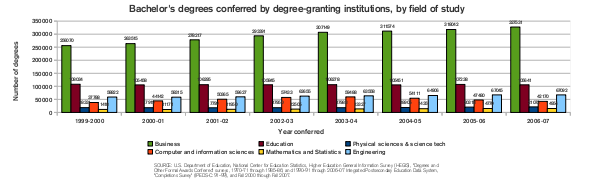
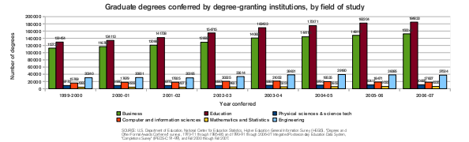
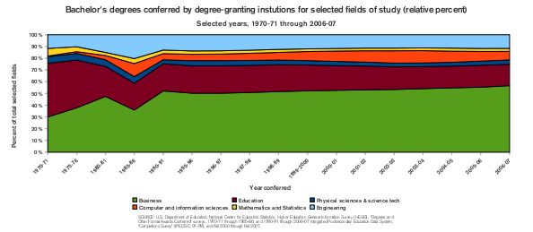
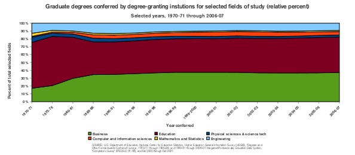

Posts
Patriot PS-100 32GB SATA SSD
[Category: Hardware and Electronics] [link] [Date: 2010-02-21 16:58:16]
While perusing the local Micro Center advertisements yesterday I came across a Patriot 32GB SATA SSD that was listed for $104.99 with a $20 rebate. This interested me and I identified it as a possible investment to temporarily make my Dell Vostro 1000 a bit more bearable. There was also the possibility of using it in a new netbook to replace the platter-based solutions that many are coming with.
Micro Center was beyond busy, but after soldiering on an employee eventually provided assistance and removed the product from the glass case it was stored in. After asking about the rebate, his friend quickly stated that he believed there was a $40 rebate on this drive. A 32GB SSD for $64.99 would be an amazing deal (assuming it isn't a completely useless product). The advertisements clearly stated a $20 rebate. After some muddling, the employee found it was now a $30 rebate. With the old man there (who was quite curious at this stage) willing to foot the bill we made the decision that it would be used in something (an old laptop, a new one, a new netbook) and that the deal was a bit too juicy to pass up. We then proceeded to wait in line for 20 minutes to have the pleasure of handing them their money. We got a good deal on some dual layer DVD's too.
The drive itself is very light and has a strong casing that appears to be made out of a lightweight aluminum-based material (much like my Lian Li case). There were no issues with using it, and Ubuntu 9.10 installed onto it with no quarrels. I read some discussions by other owners claiming that their performance was abysmal and that Patriot was accepting drives and replacing them with new ones. I decided to do a few tests using the IOZone test found in the Phoronix Test Suite. My test results on Phoronix Global can be found here.

The claimed peak speeds of this disk by Patriot are 150MB/s write and 200MB/s read. I scored an average of 122.33MB/s on the write test and 171.17MB/s on the read test. Those don't seem abysmal to me. The read speed is faster than SATA150 is even capable of (I imagine that many laptops purchased between a year or two ago still use SATA1 controllers). I'm very satisfied with those numbers. When keeping in mind that numbers provided by Patriot are peak speeds and not sustained speeds I don't believe that there is a performance issue with the drive I received. If it weren't for all of my important files being on my other laptop disk drive I would try to move over to the SSD today!
First, a disclaimer: The following statements were based off graphs I created using data from six broad academic disciplines. The data all comes from the 2008 digest published by the National Center for Education Statistics.
After spending weeks of my life preparing applications, essays, and letters alongside taking a standardized test and participating in a game of formal introductions and requests I was left wondering how many people end up going through with the whole experience. Just the act of applying for graduate school is exhausting. Statistics on how many enter and finish their graduate degrees to completion could be interesting, but I found information on total degrees conferred readily available in a report by the National Center for Education Statistics.
The report is quite sizable. If you're just in for a good summary, avoid any of the tables and focus on reading the text and making note of the figures. What I found most striking was what I perceived to be amazingly low numbers for fields like mathematics, physical sciences, and computer science. For example, only 21,703 people received a degree in the category of physical sciences and science technology in 2006-07. That's for the entire country. The primary disciplines that fall under this category are chemistry, physics, and earth science.

The picture isn't much different for graduate degrees (masters and doctoral). The most interesting data is that of the number of graduate degrees conferred in education. The number is consistently and substantially larger than the number of undergraduate degrees conferred for the same year (and that of the previous).

It is even more interesting to explore the trends of the relative amount of degrees conferred. By looking at a proportion rather than the total number, it's possible to see changes in the choice of discipline made by students. First, let's look at the trends in the proportion of bachelor's degrees conferred.

From 1971-1981 it appears that the proportion of students choosing to seek a business degree has increased steadily at a relatively constant rate. The proportions of undergraduate students receiving education degrees has contracted, physical sciences and technologies has remained stable, mathematics and statistics has shrunk, and engineering has grown. Then, there is a period in 1985-86 where the number of computer and information sciences and engineering degrees grew, but subsequently retracted. From 1995-96 onward, the proportions change very little. There is a slight bulge in computer and information science degrees in the early 2000's which declines starting around 2003-04.
Comparing proportions of graduate degrees conferred is less exciting. Other than the expected growth of the proportion of business degrees and the shrinking of the proportion of education degrees leading up to the 1990's, the proportions are amazingly stable from the 1990's onward.

In a country of 300 million people, it's almost staggering to think how few students receive degrees each year. It would seem that there are so many universities that have so many students that there must just be gaggles of students receiving degrees across the nation in just about every discipline. It often feels like that to new graduates searching for a job, at least. The numbers tell a different story. Consider that the number of students that receive degrees in mathematics, statistics, and physical sciences each year could fit into a moderately sized rural town. During 2006-07, 1351 people received a doctorate in mathematics or statistics, 2029 in business, and only 1595 in computer and information science. While this last statistic isn't evident in the previous graphs, you can see it in the OpenOffice.org Spreadsheet I made. A PDF is also available of the graphs to provide more clarity.
Quite some time ago, I was made aware of a useful feature featured in Google's charts API. The document service provided by Google provides an equation editor which is actually a friendly way to interface with TeX/LaTeX. It's possible to generate your own equations this way and share them using standard LaTeX syntax for math equations. For example, the definition of a derivative of a function at point a:
Or perhaps the definition of the mathematical constant e:
For many involved in authoring papers in scientific fields or in mathematics, LaTeX often becomes the typesetting method of choice. Even in the face of growing competition provided by equation editors in Microsoft Word and OpenOffice.org Writer, well-typeset documents produced by LaTeX still thrive. Having a simple way to generate LaTeX and share it could be useful for discussions by email where sharing some cryptic looking syntax such as:
\lim_{x\to\infty}\left(1+\frac{1}{n}\right)^n
Could be cumbersome. It's also a heck of a lot faster than generating your own images and uploading them (though if you must do this, you might want to try Ekee. A word of warning: the string that you send the charts API to generate an image cannot be larger than 200 characters. It's suited for generating single equations, but not for creating a series of them.